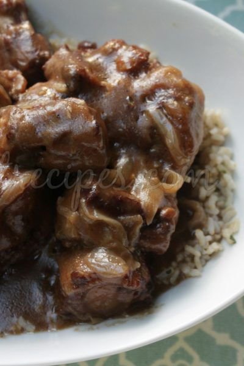

Oxtail Recipe

This Oxtail Recipe is fall off the bone tender and full of amazing flavor.
It can be made in about an hour with your pressure cooker or cooked low and slow in a slow
cooker.
Ingredients
- Oxtails
- Onion
- Garlic
- Carrots
- Scotch Bonnet or Habenero Peppers
- Black Pepper
- Garlic Power
- Browning
- Vegetable Oil
- Ground All-Spice
- Butter Beans
- Dried Thyme
- Salt
- Italian Seasoning
- Cornstarch
- Beef Broth
- Ketchup
How to make Oxtail Step-by-Step
- Rinse oxtails with water and vinegar
and pat dry. Cover oxtails with brown sugar,
soy sauce, Worcestershire sauce, salt,
garlic powder, black pepper, all-spice,
and browning and rub into oxtails.
- Set Pressure Cooker on High Sauté and once
hot, add vegetable oil. Next, add your larger
oxtail pieces to the pot, flat side down
about ¼ inch apart, and brown on each side.
- Remove oxtail after browning and place in bowl.
- Deglaze your pressure cooker by adding about 2
Tbsp of beef broth to the insert. Take a wooden
spoon and deglaze your pot by removing the
brown bits at the bottom. Then add your yellow
onions, green onions, carrots, garlic, and
scotch bonnet pepper. Stir and sauté for
about 5 minutes or until the onions have
softened.
- Add dried thyme, oxtails, remaining beef broth,
and ketchup to the pressure cooker insert.
- Press “Cancel” on your Instant Pot.
Cover and cook on high pressure for
45 minutes. Once timer is done, allow
pressure cooker to naturally release.
- Once all pressure has released, open
lid and remove oxtails and vegetables,
leaving liquid behind. Turn Pressure
Cooker on sauté. Once liquid begins
to simmer, create a corn starch slurry
by combining corn starch and water to
a separate bowl. Stir into simmering
liquid. Add drained butter beans
into pressure cooker and allow to simmer
for about 5 minutes, until liquid is
slightly thickened and butterbeans are
warmed.
- Add oxtails and vegetables back to
the pressure cooker. Serve and enjoy 🙂